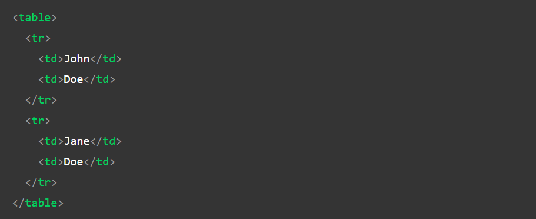
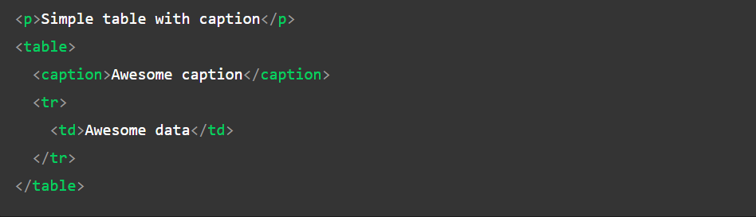
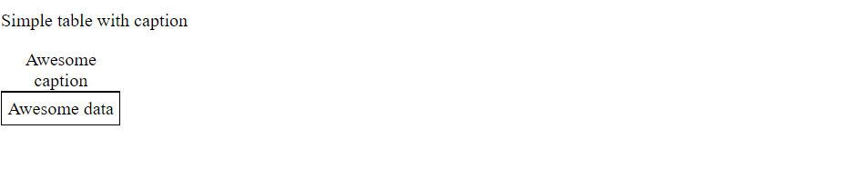

HTML Tables
In this article, we will know the HTML Table, various ways to implement it, & will also understand its usage through the examples. HTML Table is an arrangement of data in rows and columns, or possibly in a more complex structure. Tables are widely used in communication, research, and data analysis. Tables are useful for various tasks such as presenting text information and numerical data. It can be used to compare two or more items in the tabular form layout. Tables are used to create databases.
Defining Tables in HTML: An HTML table is defined with the “table” tag. Each table row is defined with the “tr” tag. A table header is defined with the “th” tag. By default, table headings are bold and centered. A table data/cell is defined with the “td” tag.

Table Attributes
- Align:
This enumerated attribute indicates how the table must be aligned inside the containing document. It may have the following values:
left: the table is displayed on the left side of the document;
center: the table is displayed in the center of the document;
right: the table is displayed on the right side of the document.
Set margin-left and margin-right to auto or margin to 0 auto to achieve an effect that is similar to the align attribute. - Bgcolor:
The background color of the table. It is a 6-digit hexadecimal RGB code, prefixed by a '#'. One of the predefined color keywords can also be used.
To achieve a similar effect, use the CSS background-color property. - Border:
This integer attribute defines, in pixels, the size of the frame surrounding the table. If set to 0, the frame attribute is set to void.
To achieve a similar effect, use the CSS border shorthand property. - Cellpadding:
This attribute defines the space between the content of a cell and its border, displayed or not. If the cellpadding's length is defined in pixels, this pixel-sized space will be applied to all four sides of the cell's content. If the length is defined using a percentage value, the content will be centered and the total vertical space (top and bottom) will represent this value. The same is true for the total horizontal space (left and right).
To achieve a similar effect, apply the border-collapse property to the "table" element, with its value set to collapse, and the padding property to the "td" elements. - Cellspacing:
This attribute defines the size of the space between two cells in a percentage value or pixels. The attribute is applied both horizontally and vertically, to the space between the top of the table and the cells of the first row, the left of the table and the first column, the right of the table and the last column and the bottom of the table and the last row.
To achieve a similar effect, apply the border-spacing property to the "table" element. border-spacing does not have any effect if border-collapse is set to collapse. - Width: This attribute defines the width of the table. Use the CSS width property instead.
Example
